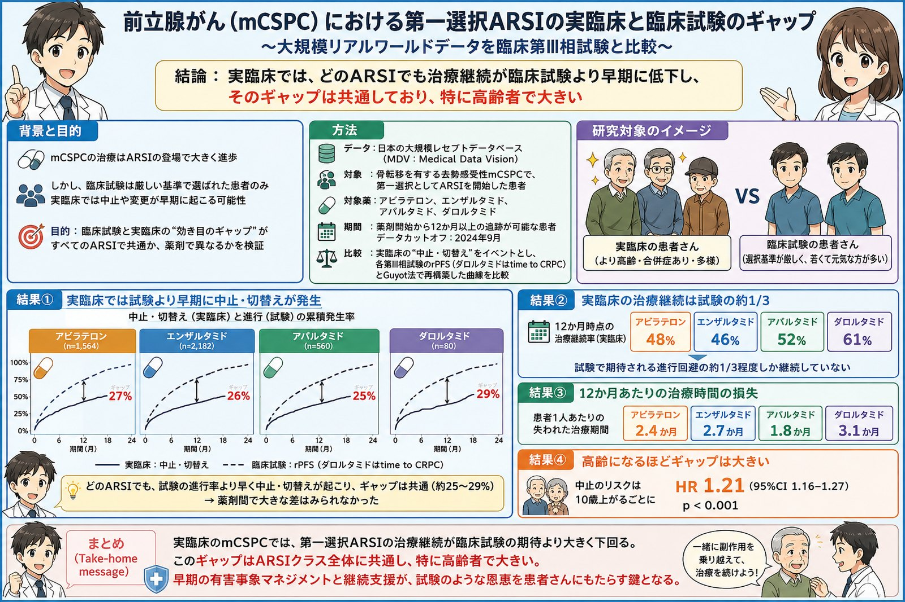

mCSPC（骨転移を有する去勢感受性前立腺がん）の治療はARSIの登場で大きく進歩しました。しかし、臨床試験は厳しい基準で選ばれた患者さんのみを対象としており、実臨床では中止や変更が早期に起こる可能性があります。本研究では、日本の大規模レセプトデータベース（MDV）を用いて、第一選択としてARSI（アビラテロン、エンザルタミド、アパルタミド、ダロルタミド）を開始した患者さんを対象に、実臨床での「中止・切替え」をイベントとして、各第III相試験のrPFS（ダロルタミドはtime to CRPC）をGuyot法で再構築した曲線と比較しました。その結果、どのARSIでも試験の進行率より早く中止・切替えが起こり、そのギャップは約25〜29%と共通しており、薬剤間で大きな差はみられませんでした。12か月時点の治療継続率は実臨床で48〜61%にとどまり、試験で期待される進行回避の約1/3程度しか継続していませんでした。患者1人あたり12か月で1.8〜3.1か月の治療期間が失われており、さらに10歳年齢が上がるごとに中止のリスクは1.21倍（95%CI 1.16–1.27, p<0.001）と、高齢になるほどギャップは大きくなりました。実臨床のmCSPCでは、第一選択ARSIの治療継続が臨床試験の期待を大きく下回り、このギャップはARSIクラス全体に共通し、特に高齢者で大きいことが分かりました。早期の有害事象マネジメントと継続支援が、試験のような恩恵を患者さんにもたらす鍵となります。